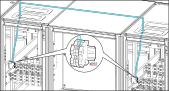

Connect the Signal Cables for the Coupling Switches in Parallel Redundant Top Cable Entry System
-
Connect the signal cables from control terminal block X092
in AUX cabinet 1 to control terminal block X092 in AUX cabinet 2 as
shown.
Figure 1. 
Figure 2. Front View of AUX Cabinet 1 and UPS 2 with AUX Cabinet 2 